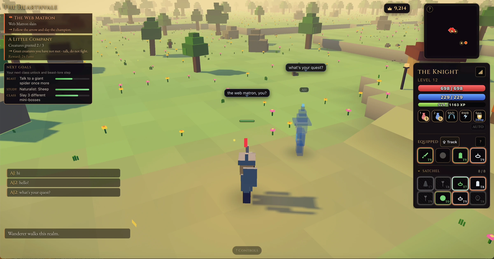

SOFTWARE ENGINEERING × ASTROPHYSICS
Follow the question.
Build the answer.
I’m AJ. I make software to understand how things work. Sometimes that means a healthcare system. Sometimes, an ocean.
 FIG. 01 / A CONTROLLED CHANGE
FIG. 01 / A CONTROLLED CHANGE
Drag the clock, or use the arrow keys. Six recorded frames from the running game; only the time-of-day setting changed.
THE OBSERVATION
The same code can feel
like six different places.
A seeded ocean gives me a controlled starting point. With the sea and wind settings fixed, the clock changes what the water reflects and how far the horizon seems to go.
The sailing has its own rules, too: point too close to the wind and the boat stops. The renderer and the simulation have to agree on the world.
Explore saltlineFurther investigations
FOLLOW ANOTHER THREAD
Can a field of light
hear a song breathe?
murmuration · Audio analysis and WebGPU
003 / SHARED STATE
What makes a world
the same for everyone?
Ember Wilds · An authoritative realm server
004 / RHYTHM & SIGNAL
Can the drums follow
the player?
BeatLayer · Beat detection and synthesis
A SHORT PROFESSIONAL RECORD
Curiosity, put to work.
Notable Health
Software engineer. Voice AI, healthcare integrations, patient identity, routing, and reliability.
UMass Amherst
B.S. Computer Science
B.S. Astrophysics
CORRESPONDENCE